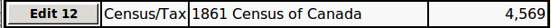

Sources Master list: Help
Every source that is referenced by a citation in the family tree is
recorded in the Sources Master List. This way all of the information
collected about a particular source is in a central record. This,
in particular facilitates ensuring that particular sources are always
identified in the same way.
You get to the Sources Master List from the Family Tree
Top Level Services
web page.
When you first enter the Sources Master List web page it displays
the first 20 sources in the list in alphabetical order.
You can scroll through the
complete list by clicking on the forward and backward arrows
at the top of the list, or by using the PgUp and PgDn keys on
the keyboard.
You use the "Pattern" field to search for sources based upon their
textual representation. The value you enter in this field
is a
regular expression pattern.
The following are just some of the features of this pattern.
- Ordinary text, particularly text containing only letters, digits,
and spaces, matches anywhere in the source. For example
entering "Michigan" will match all sources that contain the
text "Michigan". The match ignores the case, so this will also
match "michigan" and "MICHIGAN".
- The period '.' matches any single character. You can use this
any time you do not know, or care, about what character is present
at a particular spot in the source.
- The caret '^' (shift-6 on American keyboards) matches to the
beginning of the source. For example to find sources that
start with "New" enter "^New", as just entering "New" matches
sources that contain the word "New" anywhere in the text.
- The dollar sign '$' (shift-4 on American keyboards) matches to the
end of the source. For example to find sources that end with
"USA" enter "USA$".
- The asterisk '*' (shift-8 on American keyboards) causes the
immediately preceding character to match zero or more repetitions.
This is most commonly used with the period to skip over any number
of characters that do not match. For example the pattern "Mi.*USA"
matches any source that has the text "Mi" and later on the text
"USA" with any number of characters in between. For example it
will match sources including "MI, USA", "Michigan, USA",
"Mississippi, USA", and "Miami, Florida, USA".
- There are many more options which you can experiment with.
Each of the sources displayed on this web page shows:
- a button displaying the unique numeric key of the source,
is a link to a
subordinate form
that displays the information recorded
about the source, and if you are authorized to do so, permits you
to edit those details.
- the type or category to which this source belongs,
- the source name as it is displayed in reports,
- the number of citations that reference this source.
For example:

If you are signed on as a registered user the main menu,
displayed when you click on the menu button at the
top left of the page, includes an option to open a
subordinate form
to create a new source.